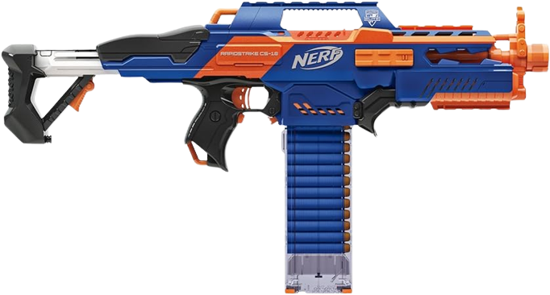

You found a secret! in reward, here is an ai generated essay about nerf blasters. Sure, I can help you with that. Nerf guns are toy blasters that fire foam darts, balls, or discs. They are popular among children and adults who enjoy playing with them for fun, competition, or role-playing. Nerf guns have a variety of models, features, and accessories that appeal to different preferences and styles. In this essay, I will discuss some of the benefits and drawbacks of nerf guns, as well as some tips on how to use them safely and responsibly. One of the main benefits of nerf guns is that they can provide entertainment and exercise for people of all ages. Nerf guns can be used to play games such as capture the flag, team deathmatch, or zombie apocalypse, where players have to cooperate, strategize, and run around. These games can stimulate the imagination, creativity, and social skills of the players, as well as improve their physical fitness and coordination. Nerf guns can also be used to practice shooting skills, such as accuracy, speed, and distance, in a safe and non-violent way. Another benefit of nerf guns is that they can be customized and modified to suit different preferences and needs. Nerf guns come in various shapes, sizes, colors, and designs, ranging from pistols and rifles to bows and crossbows. Some nerf guns have special features, such as motorized firing, rapid-fire, or slam-fire, that enhance their performance and functionality. Some nerf guns also have attachment points, where accessories such as scopes, barrels, stocks, or magazines can be added or removed. Moreover, some nerf enthusiasts like to modify their nerf guns by painting, cutting, or adding parts to them, to make them more unique, powerful, or realistic. However, nerf guns also have some drawbacks that should be considered before buying or using them. One of the main drawbacks of nerf guns is that they can be expensive and require maintenance. Nerf guns can cost anywhere from $10 to $100 or more, depending on the model, features, and accessories. Nerf guns also need batteries, darts, balls, or discs, which can run out or get lost easily. Furthermore, nerf guns can break or malfunction if they are not handled or stored properly, or if they are exposed to water, dust, or heat. Another drawback of nerf guns is that they can cause injuries or damage if they are not used safely and responsibly. Nerf guns can shoot projectiles at speeds of up to 70 miles per hour, which can hurt or bruise someone if they hit sensitive areas, such as the eyes, ears, or face. Nerf guns can also damage furniture, walls, or windows if they hit them with enough force. Therefore, nerf users should always wear protective gear, such as goggles, gloves, or helmets, and follow the rules and etiquette of nerf games, such as respecting the boundaries, targets, and consent of other players. In conclusion, nerf guns are toy blasters that can offer fun, exercise, and customization for people of all ages. However, nerf guns can also be costly, fragile, and dangerous if they are not used with care and caution. Therefore, nerf users should always be aware of the benefits and drawbacks of nerf guns, and use them in a safe and responsible manner. Nerf guns can be a great way to enjoy and express oneself, as long as they are handled with respect and common sense. Source: Conversation with Bing, 2024-01-24 (1) . https://bing.com/search?q=nerf+guns. (2) Latest Nerf Blasters, Toys and Nerf Games – Hasbro. https://shop.hasbro.com/en-us/nerf. (3) Amazon.ca: Nerf: Toys & Games. https://www.amazon.ca/Toys-Games-Nerf/s?rh=n%3A6205517011%2Cp_89%3ANerf. (4) The 5 Best Nerf Guns | Tested by GearLab. https://www.techgearlab.com/topics/cool-gadgets/best-nerf-gun. (5) The 11 Best Nerf Guns in 2024 - Best Nerf Guns for Nerf Wars. https://www.popularmechanics.com/home/g46009463/best-nerf-guns/. (6) 35 Best Nerf Guns: The Ultimate list (2022) - Heavy.com. https://heavy.com/toys/best-nerf-guns/.
